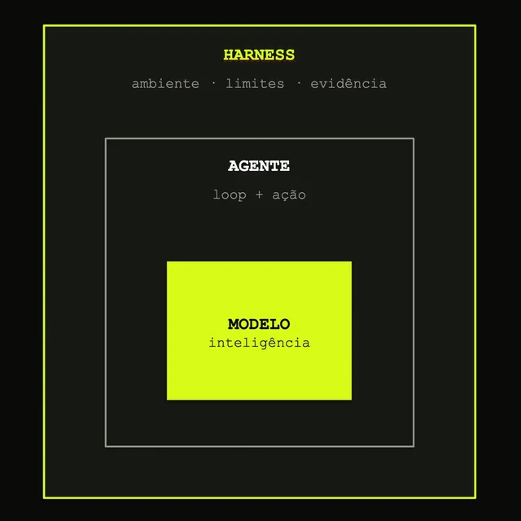
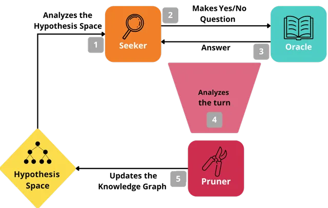
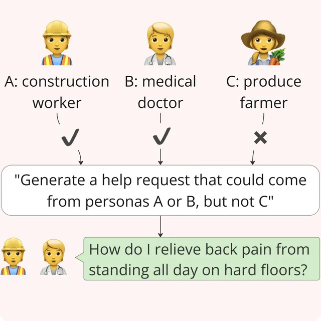
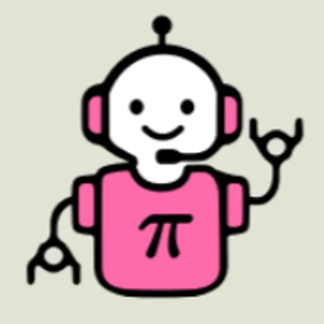
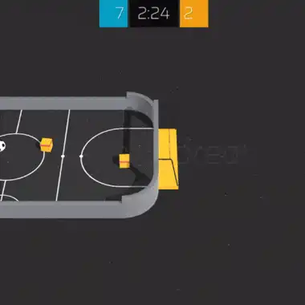
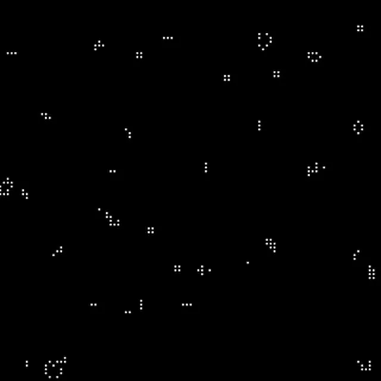
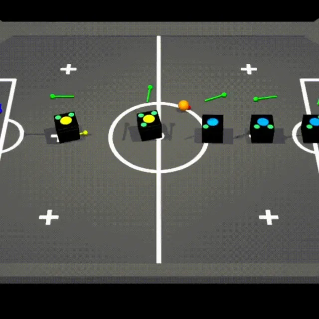

Autonomous Humanoids
Teleoperation, policy training, digital twins, Isaac Sim, and sim-to-real transfer for autonomous humanoid robots, with industry applications (WEG).
Principal Researcher · PhD Student
Hi! I'm Bryan, an AI researcher and PhD Student in Computer Science at the Federal University of Goiás (UFG), based in Goiânia, Brazil. I work at CEIA and AKCIT, where I lead interdisciplinary research teams at the intersection of Deep Reinforcement Learning and decision-making at scale.

Current work
My work focuses on building agents that solve real problems — through both task-specific models trained with Deep RL and more general LLM-powered systems. The agents I'm interested in building have to deal with the uncertainty of the world and perform long-horizon tasks. At AKCIT, I lead research on two main fronts: how agents can reason and act across different abstraction levels, from language models seeking information through dialogue to embodied agents planning in physical environments; and the empirical and theoretical foundations of modern RL algorithms. I also lead a team working on autonomous humanoid robots, covering teleoperation and sim-to-real transfer. Through CEIA, I additionally lead applied R&D with industry partners across energy, finance, and software development.
Teleoperation, policy training, digital twins, Isaac Sim, and sim-to-real transfer for autonomous humanoid robots, with industry applications (WEG).
Theoretical and empirical study of GRPO and PPO in classical reinforcement learning environments.
arXivLLM-based embodied planning under uncertainty, with Bayesian belief-state tracking.
Dialogue agents for optimal information-seeking under uncertainty, grounded in information theory.
arXivContinued pre-training and post-training RL for offline Brazilian Portuguese LLMs in education (Positivo).
Multi-turn LLM evaluation (Conv-to-Bench), deep research agents for business documents, and RLM-based agents that build and evolve other agents (HUG Labs).
arXivRLHF, RLAIF, and RLVR pipelines for alignment, reasoning, and tool-use in a large language model for the Brazilian energy sector (CEMIG).
Applied RL to orchestrate debt pricing and collection strategies at a large financial institution (Recovery / Itaú).
OpenReviewRL for recommendation systems for travel offers (Bancorbrás).
OpenReviewRL and generative models for multi-channel ad generation and campaign optimization (bettrAds).
Conservative Q-Learning for personalized marketing (Acordo Certo).
Work
Research
My research spans Deep Reinforcement Learning, representation learning, world models, and autonomous decision-making.
View Google Scholar profileHighlighted projects
Research with code and benchmarks, and public projects on GitHub.

2026 · Harness engineering
From model to system: building reliable agent harnesses in layers — context, tools, permissions, verification, and evaluation.
Open homepage
2026 · Information seeking
A multi-turn framework that measures the information gain of each question, evaluating 14 models across domains and observability modes.
View on GitHub2025 · Benchmark
A scalable benchmark for state representation in visual reinforcement learning, with 200,000+ sliding puzzle games.
View on GitHub
2025 · Benchmark
A benchmark for evaluating multi-turn dialogue agents in open-ended conversations with hidden context.
View dataset2023 · Systematic review
A systematic literature review of machine learning, especially reinforcement learning, for data-driven debt pricing.
OpenReview
2021 · Offline RL
Offline reinforcement learning for digital marketing systems via Conservative Q-Learning.
View on GitHub
2021 · Reinforcement learning
A pre-compiled Soccer-Twos environment with multi-agent Gym-compatible wrappers, built on Unity ML-Agents.
View on GitHub
2021 · Parallel computing
A cellular automata program built with C++, OpenGL, CUDA, and OpenMP.
View on GitHub
2018 · Robotics
Computer vision, navigation, control, and coordination software for the Latin-American Robotics Competition.
View on GitHubInterests & mission
I'm deeply interested in the fundamental questions of artificial intelligence and neuroscience — particularly how we can develop AI systems that learn better representations and world models to effectively plan and adapt. I believe in a principled, interdisciplinary approach to AI research that combines theory with rigorous empirical validation and real-world impact.
Research interests
To help humans and machines make better decisions, expanding human agency and accelerating the production of knowledge.
Contact
I'm always open to conversations about research, collaboration, and interesting challenges.
Whether it's exchanging ideas, exploring a collaboration, or discussing a complex technical problem, feel free to get in touch.